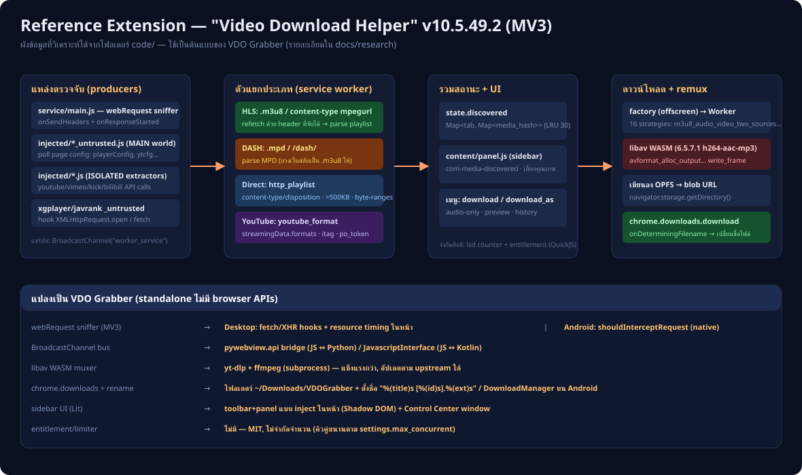

ผลการวิเคราะห์เชิงโครงสร้างจากซอร์สโค้ดจริงในโฟลเดอร์ code/
(Chrome Extension, Manifest V3 — โค้ดถูก minify จึงวิเคราะห์ด้วยการไล่สตริง/ชื่อฟังก์ชัน)
และการแปลงแนวคิดเหล่านั้นเป็น VDO Grabber ที่ไม่พึ่ง browser extension APIs
ส่วนขยายจัดการงานผ่าน 5 บริบท ที่คุยกันผ่าน BroadcastChannel("worker_service")
โดยใช้ซองข้อความ {msg, channel} และ enum ช่องทาง
FromInjectedToService:0 … FromServiceToService:8 — แพตเทิร์นนี้ปรากฏเหมือนกันใน
injected/youtube_untrusted.js, service/main.js และ download_worker/main.js
| ส่วน | บทบาท (พบหลักฐานจาก) |
|---|---|
service/main.js (554 KB) | สมองกล — ดัก network, parse m3u8/MPD, เก็บสถานะ, คิวดาวน์โหลด, DNR rules, สิทธิการใช้งาน (bundle QuickJS WASM สำหรับ license/SmartNaming — สตริง qjs_result) |
content/ | Sidebar UI แบบ Lit web components (com-main, com-media-discovered/downloading/downloaded, com-media-selector) + smartnaming.js (DSL ตั้งชื่อไฟล์: filename_change_ext, filename_merge) + history.js (transient_history, history_days) |
injected/ | สคริปต์เฉพาะเว็บ ISOLATED world + คู่ *_untrusted.js ที่รัน MAIN world (ประกาศใน manifest.json) |
factory/factory.js | Offscreen document (offscreen.createDocument({reason: WORKERS})) ทำหน้าที่เดียว: spawn new Worker("/download_worker/main.js") — และฝัง anti-repackaging เช็ค hash ของ extension ID |
download_worker/main.js | Module worker + libav.js 6.5.7.1 (libav-6.5.7.1-h264-aac-mp3.wasm) สำหรับ demux/remux |

ใน service/main.js: $f() ลงทะเบียน webRequest.onSendHeaders
(เก็บ headers ตาม requestId, TTL 600 วิ) และ webRequest.onResponseStarted →
RS() สำหรับ types xmlhttprequest|media|main_frame|sub_frame|other บน <all_urls>
จากนั้นแยกประเภท:
/mpegurl/i หรือ URL ตรง /hls|m3u8/i → zf(): refetch playlist ด้วย headers ที่จับได้ แล้ว broadcast on_media เป็น m3u8_playlist (parse ย่อย: Um, ดึง subtitle Fm, ตรวจ DRM Ef).mpd หรือ /dash/i → $S() เป็น mpd_playlist (เว็บที่มีทั้งคู่ มีการลองสลับ .mpd → .m3u8)NS(): ดู content-type/disposition, ข้ามไฟล์ < 500 KB, เช็ค accept-ranges → http_playlistyoutube.js parse streamingData.formats/adaptiveFormats, itag, signatureTimestamp, po_token เป็น youtube_formatem() เก็บใน state.discovered: Map<tab_id, {media: Map<media_hash>}> (LRU 30)ข้าม segment .ts/.m4s/.m2ts ไว้ก่อน และมีกรณีพิเศษ player.vimeo.com/…/config,
intl-api.iq.com/…/dash ที่แปลง JSON config เป็น event (vimeo_on_config, iqyi_on_config)
*_untrusted.js (MAIN world) ส่วนใหญ่ poll global — vimeo: window.playerConfig, bilibili: __initialState, youtube: ytcfg.data_.VISITOR_DATAxgplayer_crypto_untrusted.js/javrank_untrusted.js ที่ hook XMLHttpRequest.prototype.open และ window.fetch — จุดนี้เองที่ VDO Grabber ขยายเป็นแนวทางหลักkick.js POST api/v1/stream/{id}/playback, api/v2/channels/… แล้ว emit on_media เอง; youtube.js (1 MB) เป็น parser ระดับ yt-dlpBroadcastChannel("injected-" + fnv64(location.href)) ต่อหนึ่ง URLcp()): {download_id, muxer, strategy, url/url_audio, headers, good_basename, subdir, will_use_jsfetch, carry_get_params, throttle}m3u8_audio_video_two_sources, mpd_video_preview, http_strip_audio_jsfetch, youtube_audio_onlyavformat_alloc_output_context2, write_header, av_interleaved_write_frame, write_trailer) ลง OPFS → URL.createObjectURL → download_resultdownloads.onDeterminingFilename (eu(), conflictAction: uniquify) แล้วส่ง revoke_blob_url คืนpanel.js mirror สถานะ (discovered.get, invalidateState, ช่องทาง
FromContentToService/FromServiceToContent) ทุกการ์ด com-media มีตัวเลือก variant
(media_selector, update_media_preferred_entry), ป้ายคุณภาพ (quality_highest…),
preview (request_preview → strategies *_video_preview) และปุ่ม do_download ที่แนบ
{download_args, meta, media} — รองรับ download / download_as / audio-only
| เทคนิคของ extension | ใน VDO Grabber |
|---|---|
| webRequest sniffer (MV3) | Desktop: hook fetch/XHR + performance resource-timing ในหน้า (เหมือนแนวทาง *_untrusted.js) · Android: shouldInterceptRequest — ดักแบบ native ได้แม้กระทั่ง request ก่อน hook |
| BroadcastChannel bus | pywebview js_api bridge (JS↔Python) / JavascriptInterface (JS↔Kotlin) |
| libav WASM muxer | yt-dlp + ffmpeg แบบ subprocess — เครื่องมือมาตรฐาน ทดสอบกับ upstream ตลอดเวลา อัปเดตด้วย -U ได้ |
| chrome.downloads + rename | เขียนลง ~/Downloads/VDOGrabber เป็น %(title)s [%(id)s].%(ext)s / Android: DownloadManager |
| Sidebar UI (Lit) | Toolbar+panel ฉีดในหน้า (Shadow DOM แยกสไตล์) + หน้าต่าง Control Center |
| entitlement / ตัวจำกัด (lsd counter, 7200 วิ) | ไม่มี — MIT โอเพนซอร์ส จำกัดเพียงจำนวนดาวน์โหลดคู่ขนาน (settings) |
service/main.js : $f(), RS(), zf(), $S(), NS(), em(), Gy(), Pn(), cp(), vt()/oo() (DNR modifyHeaders)
"state.discovered", "on_media", "m3u8_playlist", "mpd_playlist", "http_playlist",
"youtube_format", "media_hash_", "qjs_result"
content/panel.js : "do_download", "media_selector", "update_media_preferred_entry", "quality_highest",
"request_preview", "invalidateState", "transient_history", "history_days"
factory/factory.js: "offscreen.createDocument", "downloadhelper.net:443/v2/entitlements/validate"
download_worker : "avformat_alloc_output_context2", "write_header", "av_interleaved_write_frame",
"write_trailer", "navigator.storage.getDirectory()" (OPFS)
injected/ : BroadcastChannel("injected-" + fnv64(location.href)),
window.playerConfig (vimeo), __initialState (bilibili), ytcfg.data_.VISITOR_DATA (youtube)ฟังก์ชัน/สตริงข้างต้นค้นพบได้จากไฟล์จริงภายใต้ code/ (เก็บไว้ในเครื่องผู้พัฒนา — gitignored)